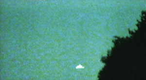

L'ovni photographié par David Spoor le 7

David Spoor se trouve dans son jardin derrière sa maison, quand un ovni apparaît. Spoor
porte son appareil photo sur lui et peut prendre plusieurs prises de vue nettes (ci-contre). L'objet fait du
surplace pendant un moment avant de disparaître derrière des buissons. Puis il réapparaît pour disparaître à nouveau
derrière des maisons. Spoor estime qu'il mesure entre 12 et 15 m de large, mais ne peut l'affirmer avec certitude.
Peu de temps après, l'objet est observé au nord-est ; il vole alors au-dessus de la mer. Toujours selon Spoor, il
reste stationnaire un moment, puis se déplace à une vitesse de 70 à 80 km/h. La lumière semble provenir de
l'intérieur de l'ovni. Spoor écarte l'hypothèse selon laquelle le vaisseau serait en fait la planète Vénus ; il affirme en effet que la planète était
visible ce jour-là, mais de l'autre côté du ciel.
A Brienne-le-Château (Aube), des flash lumineux
silencieux sont observés par des militaires. Simultanément des coupures brèves de courant sont observées. Ces
coupures sont confirmées par EDF du fait d'incident sur la ligne 33 kV desservant le secteur. Compte tenu de la
simultanéité des faits et des directions des flash observés par les 3 témoins situés à 3 endroits différents par
rapport au passage de la ligne à haute tension, il est probable que les flash observés se soient produits sur la
ligne au moment des incidents relevés sur cette ligne SEPRA: PAN
classé B.
A Narbonne (Aude), 1 témoin en voiture aperçoit 1
phénomène lumineux qu'il ne s'explique pas. Il a la présence d'esprit de filmer le phénomène qui est probablement d'origine nuageux Après visionnage de la cassette celle-ci sera rendue à son propriétaire qui souhaitait en faire un usage commercialSEPRA: PAN
classé B.
Des centaines d'ouvriers chinois travaillant dans la province de Guangdong (périphérie de Canton, Chine)
observent un phénomène de forme ovale avec une série de hublots entourés d'un halo de lumière survolant une
zone industrielle où se trouvent de nombreuses usines. Le phénomène, visible durant plusieurs minutes, émet un rayon
lumineux vers le sol. Il disparaît ensuite à une vitesse vertigineuse.
A Cergy (Val d'Oise), un automobiliste observe la chute à
grande vitessse d'un objet en flamme. Le phénomène est silencieux et très bref, environ . Il est de
couleur bleue-jaune. Un autre témoin rapporte également le même phénomène La description faite par les témoins conduit à retenir l'hypothèse d'une rentrée atmosphériqueSEPRA: PAN
classé B.